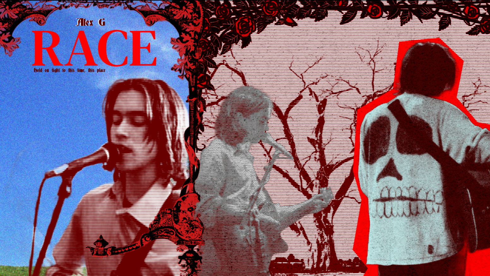

Based on a deeply religious album, I wanted to highlight values by choosing very strong warm colors. The colors directly contrast each other using a bit of color theory. There is a large emphasis placed on the larger face as he looks very reflective and encapsulates the album as a whole. There is a lot of shape use here too as it’s boxy to create a DVD box kind of look.

Focusing on a grunge-y and angsty teenage vibe, I used reds and a very striking blue to represent mood swings. There a very clear balance between the half with the dead tree and the half with the open sky to create some unity and lots of emphasis on the latter.